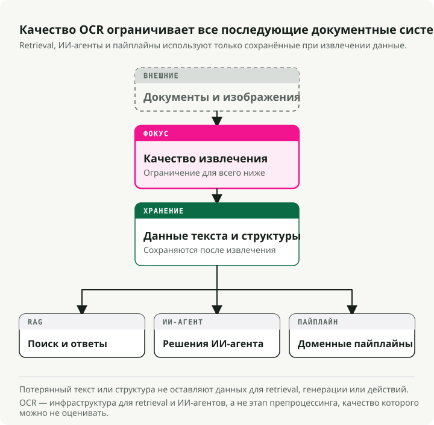
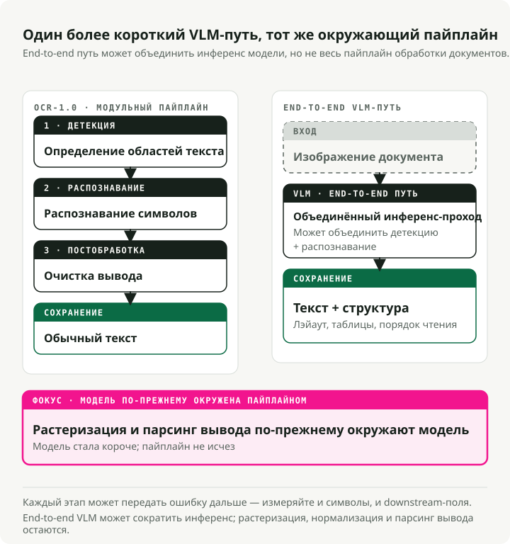
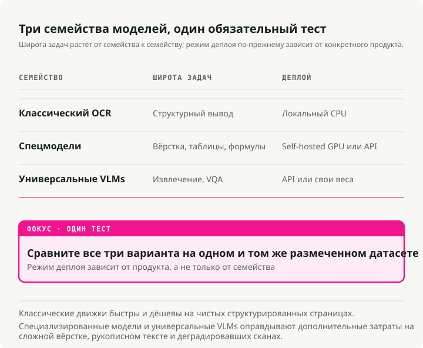
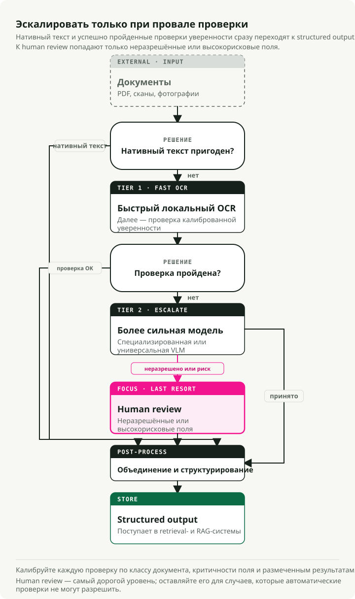

Автоматический перевод
Эта статья была автоматически переведена с оригинальной английской версии.
Полное руководство по OCR в 2026 году: от пайплайнов к VLM
Модель, которая занимает первое место в самом популярном OCR-бенчмарке, оказывается почти в самом конце, когда реальные пользователи оценивают качество. Область меняется настолько быстро, что бенчмарки не успевают за ней — а OCR теперь важнее, чем раньше, потому что любой RAG-пайплайн и любой документный ассистент сначала должен пропустить через него текст.
Vision-Language Models (VLM) лидируют в извлечении текста из сложных документов, обеспечивая в 3–4 раза более низкий Character Error Rate (CER) по сравнению с традиционными движками на шумных сканах, чеках и искаженном тексте. В начале 2026 года в лидерборде OCR Arena на первом месте находится Gemini 3 Flash, за ним идут Gemini 3 Pro, Claude Opus 4.6 и GPT-5.2. Универсальные frontier-модели теперь обгоняют специализированные OCR-системы на реальных документах. Open-source модели, такие как dots.ocr (1.7B параметров, 100+ языков) и Qwen3-VL (2B–235B), позволяют пройти большую часть пути почти при нулевой стоимости инференса.
Традиционные движки по-прежнему остаются самым быстрым и дешевым вариантом для чистых печатных документов, и ни один подход не выигрывает во всех сценариях. В этом руководстве разберем бенчмарки, модели, метрики и то, как все это действительно деплоить в продакшене.
Сопутствующий репозиторий: The OCR Gauntlet — демо в одном notebook, сравнивающее 5 типов документов в 3 классах моделей (Tesseract → dots.ocr → Gemini 3 Flash), чтобы показать провалы по качеству и компромиссы по стоимости.
Кратко: OCR-1.0 (модульные пайплайны) уступает место OCR-2.0 (сквозным VLM). Для чистых flatbed-сканов простого текста традиционный OCR (PaddleOCR/Tesseract) все еще вне конкуренции по стоимости. Для сложных макетов, чеков, рукописного текста или перекошенных фотографий нужны VLM. Frontier API, такие как Gemini 3 Flash, сейчас задают state of the art; open-source модели вроде dots.ocr и Qwen3-VL — сильные self-hosted альтернативы.
Почему OCR стал важен именно сейчас
Десятилетиями OCR был тихой периферийной областью информатики. Он оцифровывал библиотечные архивы, сортировал почту, поддерживал accessibility-инструменты для слабовидящих. Важная работа, но нишевая. Если вы не занимались document management или логистикой, можно было спокойно не обращать на него внимания.
Ситуация изменилась, когда LLM вышли в мейнстрим. Любой RAG-пайплайн, корпоративный knowledge assistant и агент для чтения документов упирается в одну и ту же стену: LLM может работать только с тем текстом, который она реально может прочитать. Внезапно миллионы PDF, сканов контрактов, инвойсов и медицинских карт нужно стало конвертировать в чистый структурированный текст в продакшн-масштабе. OCR превратился из “достаточно решенной” задачи в тяжелое узкое место для остального AI-стека.

Последствия накапливаются. Качество retrieval в вашей RAG-системе ограничено качеством OCR. Если этап извлечения ломает таблицу, ошибается в дате или теряет абзац, никакой умный chunking или тюнинг embedding-модели это ниже по пайплайну уже не исправит. Инструмент анализа контрактов, который пропустил пункт, спрятанный в плохо отсканированном приложении, — это уже юридический риск. Тот же риск возникает при обработке инвойсов, compliance-review и парсинге медкарт. Ошибки OCR распространяются на все последующие решения.
Поэтому OCR снова в центре внимания. Улучшение предложения (лучшие модели, VLM вместо пайплайнов) — это только половина истории. Вторая половина в том, что OCR теперь — это plumbing, настолько же несущая часть современного AI-стека, как vector database или embedding-модель.
Что означает OCR в эпоху foundation models
OCR давно вышел за рамки исходного определения “преобразование печатного текста в machine-readable символы”. Сегодня это уже document intelligence: извлечение текста, структуры, таблиц, формул и семантического смысла из любого визуального входа. Область движется от “OCR-1.0” (модульные пайплайны) к “OCR-2.0”, где одна end-to-end модель берет на себя все этапы.

У традиционного OCR-пайплайна три основных стадии:
- Text detection: найти области, содержащие текст (например, CRAFT, DBNet).
- Text recognition: преобразовать найденные области в последовательности символов (например, CRNN).
- Post-processing: проверка орфографии и коррекция языковой моделью.
Это хорошо работает на чистых документах. Но ошибки каскадируются. Уровень ошибки в 2% на каждом этапе в сумме дает 15–20% провала при извлечении информации на чеках.
OCR-2.0 схлопывает этот пайплайн в единый vision encoder + language decoder, который читает документ напрямую. Такие модели, как GOT-OCR 2.0, и VLM вроде Gemini 3 Flash добавляют в задачу контекстное рассуждение. Они могут понять, что “MFG: 10/24” — это дата производства, а не срок годности. Компромисс — в скорости: VLM работают в 5–10 раз медленнее, чем традиционные движки, и иногда галлюцинируют правдоподобный, но неверный текст.
Практическая оговорка: не дайте ярлыку “end-to-end” ввести себя в заблуждение. В продакшене OCR-2.0 унифицирован только на стадии распознавания. Вам все равно нужны rasterization PDF для получения изображений, image normalization (deskew, настройка DPI) для стабильного качества и parsing выхода, чтобы извлекать структурированные поля из текста модели. Пайплайн стал короче, но не исчез.
Ландшафт бенчмарков (где мы находимся в 2026 году)
Сегодня основную нагрузку по оценке OCR несут шесть датасетов:
| Dataset | Year | Test Size | Languages | Primary Metric | Top Score | Saturation |
|---|---|---|---|---|---|---|
| FUNSD | 2019 | 50 docs | English | F1 | ~93.5% | Moderate |
| SROIE | 2019 | 347 receipts | English | F1 | ~98.7% | Near-saturated |
| CORD | 2019 | 100 receipts | Indonesian | F1 | ~98.2% | Near-saturated |
| IAM | 1999 | ~1,861 lines | English | CER | ~2.75% | Moderate |
| OCRBench v2 | 2024 | 1,500 private | EN + CN | Score /100 | 63.4 | Low |
| OmniDocBench | 2024 | 1,355 pages | EN + CN | Composite | 94.62 | Low-moderate |
Разрыв между “benchmark” и “arena”
Рейтинги автоматических бенчмарков часто противоречат реальной человеческой оценке, и этот разрыв велик.
| Model | OmniDocBench | OCR Arena ELO | Arena Win Rate | Gap |
|---|---|---|---|---|
| GLM-OCR | 94.62 | 1321 | 18.8% | High bench, low arena |
| Gemini 2.5 Pro | 88.03 | 1569 | -- | Good bench, good arena |
| Gemini 3 Flash | 0.115 ED (lower=better) | 1770 | 77.2% | Moderate bench, #1 arena |
| DeepSeek-OCR | Good | 1335 | 20.2% | High bench, low arena |
На независимой community-платформе OCR Arena, где пользователи вслепую голосуют в head-to-head сравнениях, frontier VLM выигрывают матчи. GLM-OCR и DeepSeek-OCR, которые занимают верхние позиции в автоматических бенчмарках, таких как OmniDocBench, здесь оказываются почти внизу.
Наиболее вероятное объяснение: автоматические бенчмарки переоценивают отдельные типы документов и форматирование, тогда как людям важна читаемость на полном спектре грязных реальных документов. Не полагайтесь только на опубликованные метрики бенчмарков. Тестируйте на своих реальных типах документов.
Традиционные OCR-движки: все еще актуальны
Если традиционные движки хуже на сложных данных, зачем ими пользоваться? Потому что на чистых структурированных данных они быстры и дешевы.
| Engine | Speed (CPU) | Clean Doc Accuracy | Languages | Min Deploy Size |
|---|---|---|---|---|
| Tesseract 5.5 | ~0.5s/page | 98–99% CER | 100+ | ~30 MB |
| EasyOCR | ~2s/page | 95–97% CER | 80+ | ~200 MB |
| PaddleOCR v5 | ~1s/page | 97–99% CER | 106+ | 3.5 MB (mobile) |
Tesseract: все еще дефолт для чистой печати
Tesseract (v5.5.x, Apache 2.0) — самый широко используемый open-source движок. Он дает 98–99% точности на чистых печатных документах с 300+ DPI, поддерживает 100+ языков и работает только на CPU с нулевой стоимостью инференса. Ограничения тоже давно известны: он ужасен на рукописном тексте, scene text и сложных макетах. Но для огромных архивов чистого текста по стоимости его ничто не превосходит.
EasyOCR
EasyOCR сочетает CRAFT detector с CRNN recognizer. При полной GPU-акселерации через PyTorch это быстрый вариант для быстрого прототипирования и scene text.
import easyocr
# Three lines for complete OCR
reader = easyocr.Reader(["en"])
result = reader.readtext("receipt.jpg")
# Returns: [(bbox, text, confidence), ...]
PaddleOCR
PaddleOCR (PP-OCRv5) — наиболее production-ready из традиционных движков. Backbone PP-HGNetV2, дистиллированный из GOT-OCR 2.0, покрывает 106+ языков. Мобильная версия сжимается всего до 3.5MB для edge-деплоя.
from paddleocr import PaddleOCR
ocr = PaddleOCR(use_angle_cls=True, lang="en")
result = ocr.ocr("receipt.jpg", cls=True)
for line in result[0]:
bbox, (text, confidence) = line
if confidence > 0.85:
print(f"{text} ({confidence:.2f})")
VLM захватывают рынок: специализированные и универсальные модели

Как только вы выходите из зоны “чистого скана” в реальный мир (кривые чеки, перекошенные товарные этикетки, мелкий шрифт), традиционные движки перестают справляться.
Волна специализированных OCR-моделей
В 2025–2026 годах появилась волна специализированных моделей для парсинга документов:
- dots.ocr (1.7B): open-source модель, которая объединяет layout detection, recognition и reading order. Поддерживает 100+ языков и превосходит модели в 20 раз крупнее на OmniDocBench.
- GOT-OCR 2.0: унифицированная модель на 580M параметров, работающая на одной consumer GPU (~4GB VRAM) и выдающая Markdown, LaTeX и структурированную нотацию.
- DeepSeek-OCR (3B): представила “contextual optical compression”, сократив число vision tokens в 7–20 раз. Может обрабатывать 200,000+ страниц в день на одной A100.
- Mistral OCR v3: проприетарная модель, оптимизированная специально под извлечение текста и структуры. Стоит \(2/1K pages (\)1 с batch API), достигает 96.6% на сложных таблицах и 88.9% на рукописном тексте.
Frontier VLM
Для сложного визуального reasoning или глубоко неструктурированных документов берут frontier-универсалов:
- Qwen3-VL (Alibaba): ведущая open-source VLM-семья для OCR (от 2B до 235B). Нативный контекст на 256K токенов, хорошо держится при плохом освещении и blur, покрывает 32 языка.
- Gemini 3 Flash (Google): сейчас лучшая модель на OCR Arena. Сочетает reasoning уровня Pro с latency и ценой класса Flash ($0.50/M tokens).
- Claude Opus 4.6 (Anthropic): силен в структурированном JSON-извлечении из графиков и в многошаговом reasoning по содержимому документов.
- GPT-5.2 (OpenAI): хорошо работает с плотными многоколоночными макетами, включая mixed-format документы с таблицами, текстом и изображениями.
Задержка по уровням
В продакшене latency важна не меньше, чем точность:
| Tier | Example | Latency/page | Hardware |
|---|---|---|---|
| Traditional | Tesseract, PaddleOCR | 0.5–3s | CPU |
| Specialized VLM | dots.ocr, GOT-OCR | 3–8s | GPU |
| Frontier VLM | Gemini Flash, GPT-5.2 | 5–15s | API |
Метрики: измерять нужно то, что действительно важно
Выбирайте метрику под тип выхода:
- CER и WER для plain text. Character / Word Error Rate. Хороший CER — 1–2% на печатном тексте. Важно: choices в preprocessing (case folding, whitespace) могут сдвинуть CER на 5–15%, поэтому сначала зафиксируйте протокол сравнения, и только потом сравнивайте модели.
- EMR и Field F1 для форм и чеков. Exact Match Rate — бинарная метрика, и именно это нужно для налоговых ID и итоговых сумм. Field F1 балансирует precision и recall по каждому типу поля.
- TEDS для таблиц. Tree Edit Distance по HTML-представлению дерева ловит многошаговые ошибки выравнивания ячеек, которые CER скрывает.
- ANLS для document VQA. Average Normalized Levenshtein Similarity дает частичный зачет ответам с небольшими OCR-ошибками.
Для реализации: jiwer умеет CER/WER из коробки, а реализации TEDS находятся в репозитории OmniDocBench.
Тестирование VLM через OpenRouter
OpenRouter предоставляет единый API gateway к 400+ AI-моделям через один OpenAI-compatible endpoint. Чтобы переключаться между Gemini Flash, Qwen-VL, GPT-5.x и Claude, достаточно поменять один параметр.
import base64
from openai import OpenAI
client = OpenAI(base_url="https://openrouter.ai/api/v1", api_key="your-key")
def extract_text(image_path: str, model: str) -> str:
with open(image_path, "rb") as f:
image_b64 = base64.b64encode(f.read()).decode()
response = client.chat.completions.create(
model=model,
messages=[{
"role": "user",
"content": [
{"type": "text", "text": "Extract all text from this image, preserving layout as markdown."},
{"type": "image_url", "image_url": {"url": f"data:image/jpeg;base64,{image_b64}"}},
],
}],
max_tokens=4096,
)
return response.choices[0].message.content
# Compare models by changing one string
models = ["google/gemini-3-flash", "anthropic/claude-sonnet-4.5", "qwen/qwen3-vl-8b"]
for model in models:
print(f"\n--- {model} ---\n{extract_text('receipt.jpg', model)[:200]}...")
Для структурированного извлечения (например, чтобы вытянуть типизированные поля из чека), используйте response_format с JSON schema, чтобы модель вернула валидированный, готовый к парсингу результат:
import json
response = client.chat.completions.create(
model="google/gemini-3-flash",
messages=[{
"role": "user",
"content": [
{"type": "text", "text": "Extract the receipt fields from this image."},
{"type": "image_url", "image_url": {"url": f"data:image/jpeg;base64,{image_b64}"}},
],
}],
max_tokens=4096,
response_format={
"type": "json_schema",
"json_schema": {
"name": "receipt",
"schema": {
"type": "object",
"properties": {
"vendor": {"type": "string"},
"date": {"type": "string"},
"items": {
"type": "array",
"items": {
"type": "object",
"properties": {
"description": {"type": "string"},
"amount": {"type": "number"},
},
},
},
"total": {"type": "number"},
},
},
},
},
)
receipt = json.loads(response.choices[0].message.content)
Результаты бенчмарков: что числа реально показывают
Вместо того чтобы отправлять вас запускать notebook, вот ключевые результаты из OmniDocBench, самого подробного доступного бенчмарка по document parsing. Данные взяты из лидерборда OmniDocBench и статьи dots.ocr (arXiv:2512.02498):
| Model | Size | Text Edit Dist (EN) | Table TEDS | Overall |
|---|---|---|---|---|
| PaddleOCR-VL | 0.9B | 0.035 | 90.89 | 92.86 |
| dots.ocr | 3B | 0.048 | 86.78 | 88.41 |
| Gemini 2.5 Pro | — | 0.075 | 85.71 | 88.03 |
| MinerU (pipeline) | — | 0.209 | 70.90 | 75.51 |
| GPT-4o | — | 0.217 | 67.07 | 75.02 |
Интересный результат: PaddleOCR-VL при размере всего 0.9B лидирует по совокупному качеству, а dots.ocr с 3B обгоняет и Gemini 2.5 Pro, и GPT-4o. Размер — не главное; архитектура и обучающие данные в этом бенчмарке значат больше.
🔧 Запустите сами: The OCR Gauntlet — это один runnable notebook, который тестирует пять типов документов (чистый invoice, мятый чек, рукописная форма, научная статья, многоязычный документ) на трех уровнях (Tesseract → dots.ocr → Gemini 3 Flash) и показывает CER/EMR рядом с анализом стоимости.
Деплой OCR в продакшен
Продакшен-системы OCR обычно строятся по tiered-архитектуре. Нужно разделять CPU-нагрузки (rasterization, normalization) и GPU-нагрузки (inference).

💡 Примечание о data pipeline: когда нужно преобразовать 10,000 PDF в markdown, готовый для LLM в RAG-пайплайне, orchestration-инструменты вроде Docling подходят лучше всего: они берут на себя batching, retries и массовую конвертацию. Но за сырое качество извлечения и решения по маршрутизации отвечает именно tiered-паттерн ниже.
Многоуровневый fallback-паттерн
Не используйте дорогой VLM на идеально чистом и простом текстовом документе. Реализуйте routing по confidence:
- Проверьте наличие встроенного текста (Tier 0). Для PDF перед rasterization проверьте, есть ли встроенный текстовый слой, используя
PyMuPDFилиpdfplumber. PDF, изначально созданные в цифре (invoices, научные статьи), часто уже содержат идеальный текст — OCR можно пропустить полностью. - Сначала попробуйте быструю модель (например, PaddleOCR или Tesseract, только CPU — покрывает ~80% чистого трафика).
- Оцените confidence. Если confidence > 0.90, сразу принимаем результат.
- Эскалируйте на VLM среднего уровня. Если 0.70 < confidence < 0.90, направляйте в
dots.ocrили Qwen3-VL-8B. - Эскалируйте на premium VLM или человеку. Если confidence < 0.70, направляйте в Gemini 3 Flash / GPT-5.2 или в очередь на human review.
💡 Примечание о расчете confidence: быстрые модели по умолчанию выдают confidence на основе softmax-оценок вероятности символов. В продакшене не стоит просто усреднять эти оценки по всему документу. Лучше использовать среднее, взвешенное по площади (умножая confidence каждого текстового блока на площадь его bounding box), чтобы крошечный размытый watermark не обрушил оценку у в целом отлично читаемой страницы. Для high-stakes routing (например, ID-номера) используйте жесткое пороговое ограничение по минимуму, где любое критичное поле ниже 0.90 вызывает эскалацию.
def area_weighted_confidence(ocr_result):
"""Compute area-weighted confidence from PaddleOCR output."""
total_area, weighted_sum = 0, 0
for line in ocr_result[0]:
bbox, (text, conf) = line
width = bbox[1][0] - bbox[0][0]
height = bbox[2][1] - bbox[1][1]
area = abs(width * height)
weighted_sum += conf * area
total_area += area
return weighted_sum / total_area if total_area > 0 else 0
Анализ стоимости в масштабе
Порог, после которого self-hosting обычно начинает выигрывать, — 100K–500K страниц в месяц.
| Scale | Cloud OCR APIs (Mistral, Gemini) | Self-hosted VLM (Qwen, dots) | Self-hosted Traditional |
|---|---|---|---|
| 10K pages/mo | ~$20–25 | Not cost-effective | Free (CPU) |
| 100K pages/mo | ~$200–250 | ~$50–100 | Free–$20 |
| 1M pages/mo | ~$2,000–2,500 | ~$100–200 | Free–$50 |
| 10M pages/mo | ~$20,000–25,000 | ~$700–1,000 | $200–500 |
💡 Допущения: ~1,500 tokens/page. Стоимость cloud API основана на Mistral OCR 3 по $2/1K pages и Gemini 3 Flash по $0.50/M input + \(3.00/M output tokens (~\)2.25/1K pages). Для self-hosted GPU предполагается одна A100 по ~$1.50/час. Традиционный OCR — на 4-core CPU.
В масштабе self-hosted VLM, развернутые через vLLM с PagedAttention, становятся заметно дешевле provider API. Модели вроде DeepSeek-OCR дополнительно снижают стоимость, сжимая страницы документа в меньшее количество visual tokens — примерно 10-кратное сокращение токенов при сохранении ~97% точности.
Обработка ошибок: проблема галлюцинаций
В отличие от традиционных OCR-ошибок (статистически предсказуемые опечатки), галлюцинации VLM создают контекстно правдоподобный, но фактически неверный текст. Итоговая сумма в чеке “\\(42.50” может превратиться в “\\\)45.20” — синтаксически корректно, но неверно, и spell-checker этого не заметит.
Конкретный пример: VLM извлекает чек с тремя позициями (\\(12.00, \\\)18.50, \\(12.00) и указанной общей суммой “\\\)45.20”. Реальная сумма — \\(42.50: модель переставила цифры в одной строке (\\\)18.50 → \$15.20) и затем подогнала total под свою же галлюцинацию. Все выглядит внутренне согласованным, но это неверно.
Несколько практических мер защиты:
- Проверка контрольных сумм. Для инвойсов проверяйте, что суммы по строкам сходятся с указанным total, и отправляйте несовпадения на human review.
- Regex sanity-checks для дат (нет 13-го месяца), телефонных номеров (правильное число цифр) и денежных форматов.
- Сверка строк и total. Сравнивайте subtotal, извлеченный VLM, с независимой суммой по тем же строкам, которые модель сама извлекла.
- Кросс-проверка между моделями. Прогоняйте критичные поля через две разные модели и помечайте расхождения.
- Кросс-проверка через традиционный OCR. Прогоняйте финансовые значения через традиционный OCR параллельно с VLM. Ошибки традиционного OCR случайны, ошибки VLM согласованы, поэтому совпадение между ними — сильный сигнал корректности.
Ключевые выводы
- VLM — новый дефолт для грязных данных. Традиционные движки каскадируют ошибки на перекошенных, деградировавших и нестандартных документах. VLM читают страницу целиком и дают CER в 3–4 раза ниже.
- Автоматические бенчмарки \(\\neq\) производительность в реальном мире. Модели, которые лидируют в OmniDocBench, часто проваливаются в head-to-head тестах с человеческим выбором на OCR Arena.
- Стройте многоуровневые пайплайны. Используйте быстрые традиционные инструменты (Tesseract, PaddleOCR) для чистого текста и оставляйте дорогой инференс (Gemini 3 Flash, Mistral OCR) только для сложных случаев.
- Остерегайтесь галлюцинаций. В отличие от традиционных OCR-ошибок, галлюцинации VLM порождают правдоподобный текст, который проходит мимо spell-checker.
- Open-source уже достаточно хорош для продакшена.
dots.ocr(1.7B) иQwen3-VLзакрывают большую часть продакшен-задач, если self-hosting важен из-за стоимости или compliance.
Большая часть того, что раньше считалось OCR-инжинирингом — тюнинг binarization, ручная подгонка detection bounding boxes, погоня за последним 1% на чистой печати — больше не является основной работой. Самые интересные задачи сейчас — это routing, evaluation и защита от галлюцинаций.
Ссылки
- OCR Arena Leaderboard - Краудсорсинговые head-to-head баттлы моделей
- The OCR Gauntlet repo - Runnable notebook для тестирования трехуровневой OCR-архитектуры
- OmniDocBench - End-to-end eval для парсинга документов
- dots.ocr - Унифицированный VLM-парсер документов на 1.7B параметров
- PaddleOCR - Самый полный традиционный OCR-пайплайн
- OpenRouter - Единый gateway-доступ для A/B-тестирования моделей